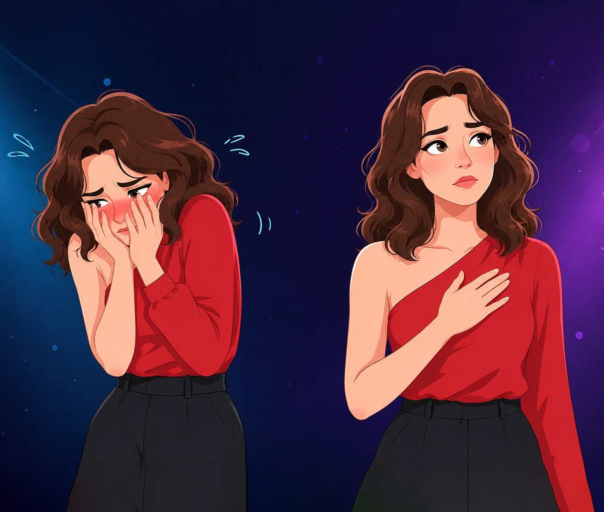
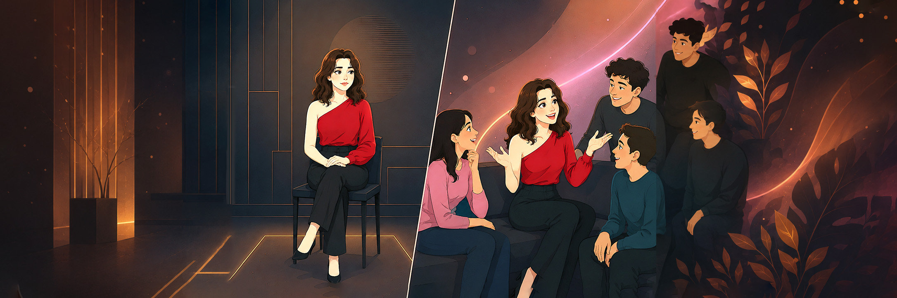

Izabela Rybka · Anna Seruga-Łężniak · Julia Bladowska Krzysztof Lindorf · Mateusz Pomianek
Uniwersytet Vizja, Warszawa · 14 czerwca 2026
Plan prezentacji
Wprowadzenie i cele przeglądu
Podstawy teoretyczne
Metodologie i wyzwania
Kluczowe odkrycia empiryczne
Perspektywy teoretyczne
Konwergencje i rozbieżności
Ograniczenia i kierunki dalszych badań
Wnioski i implikacje praktyczne
Wprowadzenie i cele przeglądu
Dlaczego wstyd i wina?
Fundamentalne emocje samoświadomościowe
Regulacja zachowań społecznych
Silna zmienność międzykulturowa
Znaczenie dla psychoterapii i edukacji
Cele przeglądu
Perspektywa antropologiczna
Synteza teorii psychologii kulturowej
Omówienie wybranych zagadnień
Identyfikacja luk badawczych
Klasyczne rozróżnienia
Kultury wstydu
Zewnętrzna orientacja moralna
Publiczne potępienie jako regulator
Utraty twarzy
Archetyp: Japonia

Rozróżnienie pomiędzy wstydem, a winą
Kultury winy
Wewnętrzna orientacja moralna
Znaczenie sumienia
Indywidualna odpowiedzialność
Archetyp: Zachód
Współczesne badania zakwestionowały prosty podział kultur wstydu i winy.
Ewolucja perspektyw teoretycznych
Lata 40.–70.
Esencjalizm
Prosty podział Benedict.
Lata 80.–90.
Korekty empiryczne
Badania wielowymiarowe.
2000–2010
Kontekstualizm
Ocena poznawcza i ewolucja.
2010–dziś
Modele zintegrowane
Podejścia ekosocjalne.
Metody badawcze
Różne metody dają różne odpowiedzi. Kwestionariusze dobrze porównują populacje,
a wywiady etnograficzne lepiej pokazują lokalne znaczenia i subtelne różnice pojęciowe.
Kwestionariusze i scenariusze
Systematyczne porównania między kulturami.
Wywiady etnograficzne
Wgląd w znaczenia kulturowe emocji.
MMFA
Niezmienność pomiarowa i analiza czynnikowa.
Badania narracyjne
Lokalne systemy znaczeń emocji.
Sam wynik procentowy rzadko wyjaśnia, co emocja oznacza dla badanych osób.
Wyzwania metodologiczne
Ekwiwalencja semantyczna – czy pojęcia emocji są porównywalne?
Próbkowanie kulturowe – dominacja badań USA–Azja Wschodnia.
Badania przekrojowe – brak perspektywy podłużnej.
Fragmentacja analiz – słaba integracja neurobiologii i kultury.
Indywidualizm i kolektywizm
Zależność ta nie jest liniowa. W kulturach kolektywistycznych wstyd
częściej pojawia się jako reakcja na naruszenie relacji, a wina częściej wiąże się z oceną zgodności z normą.
Kultury kolektywistyczne wykazują wyższy poziom wstydu, natomiast relacja kolektywizm–wina pozostaje bardziej złożona.
85%
Wstyd kolektywizm
45%
Wstyd indywidualizm
60%
Wina kolektywizm
65%
Wina indywidualizm
Odczyt zależności powinien uwzględniać normy rodzinne,
styl socjalizacji i sposób mówienia o odpowiedzialności.
Schematyczne porównanie wstydu i winy
Zestawienie ilustruje kierunek zależności: w kulturach kolektywistycznych silniej zaznacza się wstyd, natomiast poziom winy pozostaje bardziej zależny od kontekstu i sposobu pomiaru.
Różnice międzykulturowe
Chiny vs Kanada
Silniejszy i trwalszy wstyd w Chinach. W Kanadzie silniejsze motywacje naprawcze związane z winą.
Turcja vs Niemcy
W Turcji wstyd wzmacnia perspektywę społeczną, w Niemczech większą rolę odgrywa wina.
Włochy vs USA
Większe nakładanie się wstydu i zakłopotania we Włoszech.

W takim ujęciu różnice międzykulturowe stają się mniej rankingiem,
a bardziej mapą sposobów regulacji relacji społecznych.
Konteksty wywołujące emocje
Wzorce uniwersalne
Wstyd przy publicznych niepowodzeniach
Wina przy naruszeniu norm moralnych
Wspólne zachowania naprawcze
Różnice kulturowe
Wstyd prywatny w kulturze chińskiej
Silniejszy wpływ religijności w ZEA
Wpływ globalizacji i akulturacji
To, co w jednej kulturze jest sygnałem zdrowej autorefleksji,
w innej może być odczytywane jako nadmierna samokontrola lub zagrożenie relacyjne.
A to ma przecież bezpośrednie znaczenie kliniczne.
Semantyka i konceptualizacja
Terminy emocjonalne nie są prostymi translacjami.
Reprezentują odmienne konceptualizacje moralności, relacji społecznych i self.
xiū羞耻 (xiūchǐ)wstydguiltRarámuri
Dlatego porównania międzykulturowe wymagają nie tylko tłumaczenia słów,
ale też rekonstrukcji lokalnych ram znaczeniowych.
4 perspektywy teoretyczne
T1 · Teoria oceny poznawczej
Ocena sytuacji i zgodności z normami.
T2 · Podejście społeczno-funkcjonalne
Emocje jako regulatory zachowań społecznych.
T3 · Perspektywa ewolucyjna
Wstyd jako mechanizm adaptacyjny.
T4 · Konstruktywizm
Emocje jako produkty praktyk i języka.
Konwergencje i rozbieżności
Konwergencje
Wyższy wstyd w kulturach kolektywistycznych
Uniwersalne funkcje ewolucyjne
Powtarzalne wzorce sytuacyjne
Rozbieżności
Niespójna relacja kolektywizm–wina
Spór o uniwersalność emocji
Różnice w relacji wstyd–wina
Najbardziej użyteczne są dziś modele hybrydowe:
uznają zarówno wspólne mechanizmy emocjonalne,
jak i lokalne sposoby ich interpretowania.
Schematyczny udział konwergencji i rozbieżności
Dla wstydu obserwujemy silniejsze konwergencje między badaniami, podczas gdy w obszarze winy częściej pojawiają się rozbieżności interpretacyjne i metodologiczne.
Ograniczenia obecnych badań
Ekwiwalencja pomiarowa
Nie zawsze wiadomo, czy skale mierzą ten sam konstrukt w różnych językach i kulturach.
Nierównowaga prób
Dominują porównania Zachód-Azja; mniej danych dotyczy społeczeństw afrykańskich, latynoamerykańskich, rdzennych i części bliskowschodnich.
Brak perspektywy podłużnej
Nadal słabo wiadomo, jak wstyd i wina rozwijają się w ontogenezie oraz pod wpływem migracji i akulturacji.
Słaba integracja poziomów
Potrzebne są modele łączące język, kulturę, rozwój, procesy poznawcze i neurobiologię.
Implikacje praktyczne
Psychoterapia
Nie należy narzucać zachodniego rozumienia wstydu i winy klientom z innych kontekstów kulturowych.
Edukacja
Publiczna krytyka, pochwała i ocena osiągnięć mogą wywoływać odmienne reakcje zależnie od socjalizacji kulturowej.
Organizacje
Wstyd i wina wpływają na odpowiedzialność, przyjmowanie perspektywy, negocjacje i naprawianie konfliktów.
Prawo i polityka społeczna
Sprawiedliwość naprawcza wymaga wrażliwości na kulturowe znaczenie przeprosin, kompensacji i odbudowy relacji.
Najcenniejsze będą projekty długofalowe i międzydyscyplinarne,
bo tylko one pokażą, jak emocje zmieniają się wraz z wiekiem,
migracją i zmianą kontekstu społecznego.
Wnioski
Zamiast szukać prostego podziału kultur, warto badać mechanizmy,
które uruchamiają emocje i nadają im znaczenie w konkretnych społecznościach.
Kultury kolektywistyczne wykazują wyższy poziom wstydu.
Relacja z winą jest wielowymiarowa i zależna od kontekstu.
Emocje są osadzone w języku i kulturze.
Najbardziej obiecujące są modele integrujące neurobiologię, psychologię i kulturę.
W praktyce pytanie nie brzmi więc, „czy dana kultura jest kulturą wstydu?”,
ale „w jakich sytuacjach i przez jakie normy wstyd lub wina zostają wywołane”.
Wybrane pozycje bibliograficzne
Bierbrauer, G. (1992). Reactions to Violation of Normative Standards: A Cross-Cultural Analysis of Shame and Guilt. International Journal of Psychology. DOI: 10.1080/00207599208246874
Furukawa, E. et al. (2012). Cross-cultural Continuities and Discontinuities in Shame, Guilt, and Pride. Self and Identity. DOI: 10.1080/15298868.2010.512748
Young, I. F. et al. (2021). A Multidimensional Approach to the Relationship between Individualism-Collectivism and Guilt and Shame. Emotion. DOI: 10.1037/EMO0000689
Su, J. et al. (2020). Chinese and Canadian Identity on Responses to the Experience of Shame and Guilt. International Journal of Mental Health and Addiction. DOI: 10.1007/S11469-020-00350-9
Söylemez, S. et al. (2022). How Shame and Guilt Influence Perspective Taking: A Comparison of Turkish and German Cultures. Journal of Cognition and Culture. DOI: 10.1163/15685373-12340123
Giorgetta, C. et al. (2023). Guilt, shame, and embarrassment: similar or different emotions?Frontiers in Psychology. DOI: 10.3389/fpsyg.2023.1260396
Liu, C. et al. (2023). Social-functional characteristics of Chinese terms translated as “shame” or “guilt”. Cognition & Emotion. DOI: 10.1080/02699931.2023.2179976
Kirmayer, L. J. et al. (2018). Cultural logics of emotion: Implications for understanding torture and its sequelae. Torture. DOI: 10.7146/TORTURE.V28I1.105480
Dobór pozycji obejmuje klasyczne badania porównawcze, prace rozwojowe, analizy semantyczne oraz współczesne modele integrujące psychologię kulturową z szerszym kontekstem społecznym.
Dziękujemy za uwagę
Pytania, dyskusja i tyle
Izabela Rybka · Anna Seruga-Łężniak · Julia Bladowska Krzysztof Lindorf · Mateusz Pomianek
Suplement
Jeżeli podgląd tego pliku nie wyświetla się poprawnie, możesz otworzyć go bezpośrednio:
files/wstyd_wina.pdf.